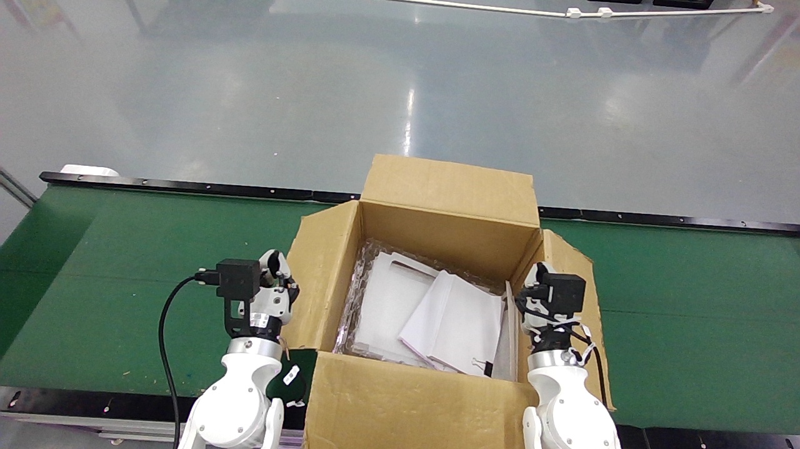
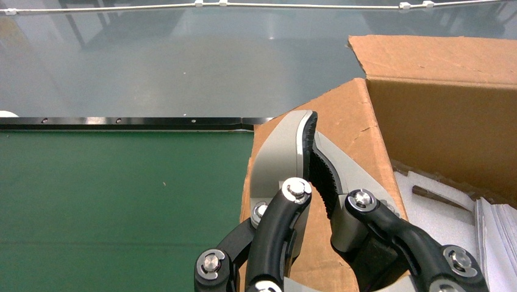
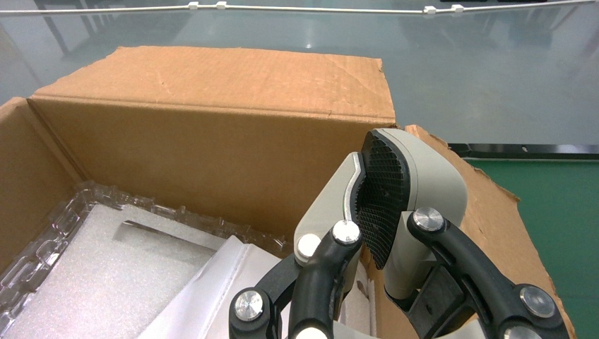
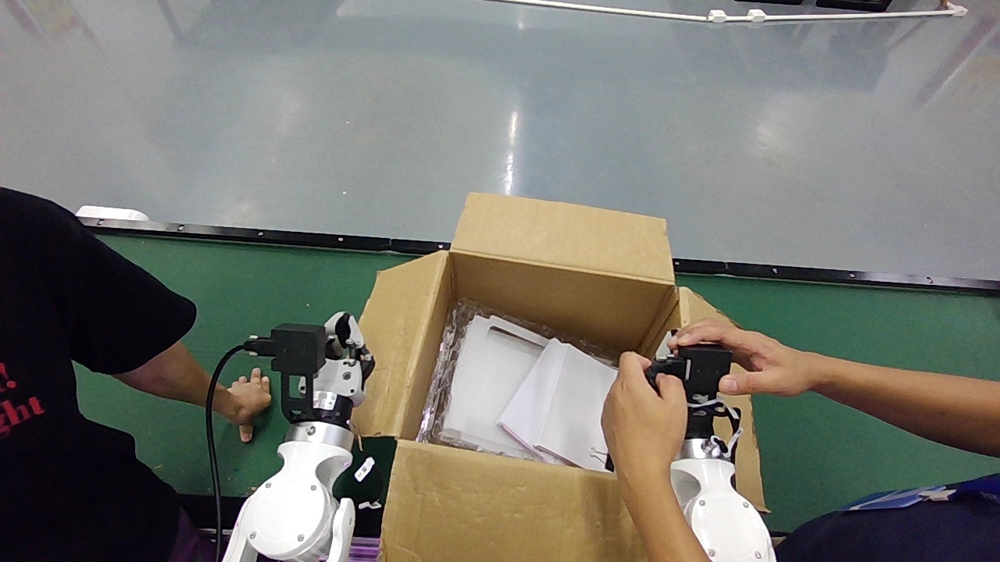
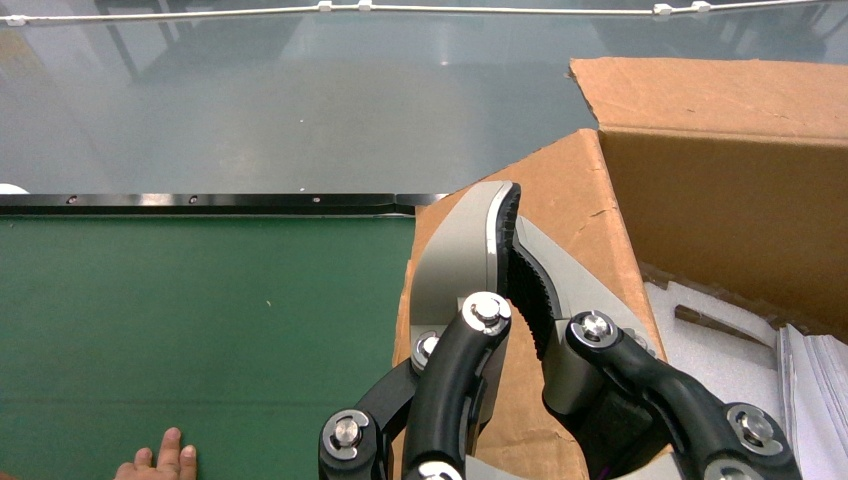
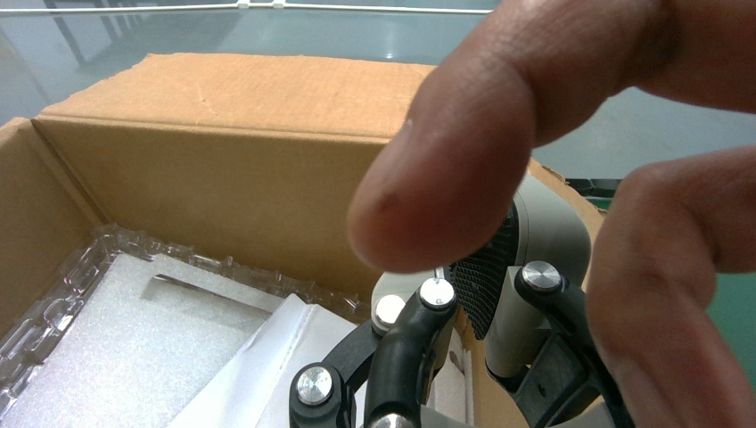
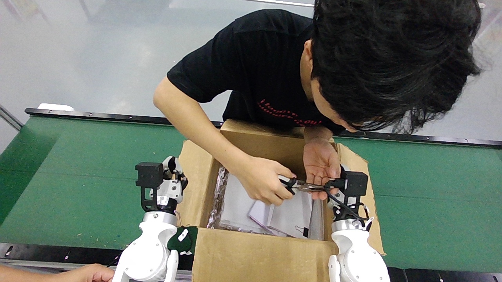
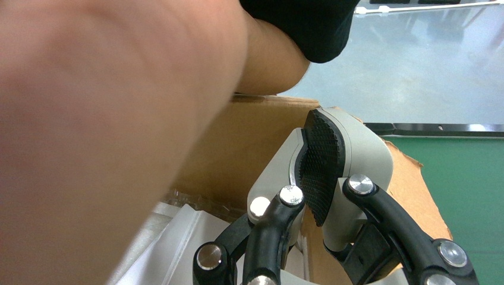

录制：2026-09-16 16:10:04.062–16:18:24.027（北京时间）· 499.964秒 · 5.816 GB
按bag时间选取附近原帧，源header时间差单独保留；不是严格同步帧。没有回放机器人动作。
bag最大差 16.712 ms · 源header最大差 76.408 ms



bag最大差 38.323 ms · 源header最大差 41.394 ms



bag最大差 37.772 ms · 源header最大差 91.301 ms

